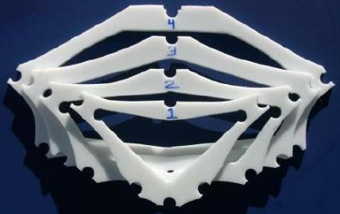
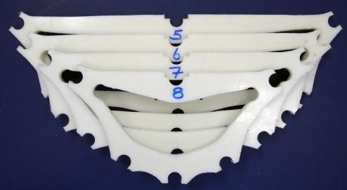

| HDPE Cross Sections | Menu Previous Page Next Page |
|  |  |
|
Overview
High Density Polyethylene (HDPE) is used to make the cross sections. This material is easy to cut and drill and is very durable. It's main feature is it's ability to "snap" onto the aluminum stingers for assembly. This eliminates the need for making complicated mechanical connectors. HDPE cross sections have been used by commercial manufacturer "Feathercraft" for many years.
HDPE comes in 4ft by 8ft sheets and costs approx. $150.00US per sheet. That's enough material to make cross sections and coamings for 2+ kayaks depending on the size and the number of cross sections. HDPE can be drilled with standard wood bits, and cut with smooth wood cutting jigsaw blades. There is no sanding or finishing required. A file is used on the edges to smooth them after cutting. Though heavier than plywood, the total weight of the 8 Sea Ranger cross sections is under 4 lbs. Tools Required Drill Press - Since the holes need to be precision cut, a drill press is recommended. A 3/4" Forstner bit is used. Jig Saw - A standard jigsaw with smooth cutting "wood" blades are used to cut out the sections. Blades and bits last a long time when used for cutting and drilling HDPE. |
|